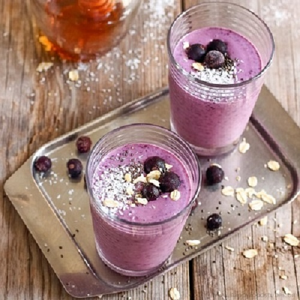

| બ્લુબેરી જ્યૂસના 5 સ્વાસ્થ્ય લાભો |
| ઓછી કેલરી |
| વિટામીન સી માં ઉચ્ચ |
| સિસ્ટોલિક બ્લડ પ્રેશર સુધારે છે |
| મજબૂત હાડકાં જાળવો |
| મેંગેનીઝનું પ્રમાણ વધારે છે |
|
|
- 1 કપ બ્લુબેરી
- 1 એપલ
- 1 સેલરી દાંડી
- 1/2 કાકડી, વૈકલ્પિક
- 1/4 બીટરૂટ
- 1/4 લીંબુ અથવા ચૂનો
- 1/2 કપ પાણી
- 2-3 બરફના ટુકડા, વૈકલ્પિક
|
|
- જ્યુસર લો અને તેના થૂંકની નીચે ખાલી ગ્લાસ અથવા કન્ટેનર મૂકો.
- જ્યુસર દ્વારા વૈકલ્પિક રીતે તમામ શાકભાજી અને ફળોને પ્રોસેસ કરો.
- તૈયાર કરેલા રસ પર લીંબુ નિચોવીને બરાબર હલાવો.
- ગ્લાસમાં બરફ ભરો અને તેના પર જ્યુસ રેડો, વૈકલ્પિક રીતે ફુદીનાના સ્પ્રિગથી ગાર્નિશ કરીને સર્વ કરો.